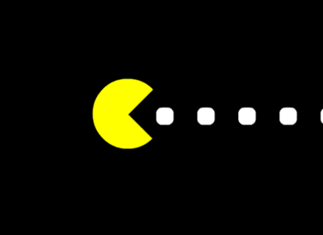

Un cambrioleur possède un sac à dos d'une contenance maximum de 30 Kg. Au cours d'un de ses cambriolages, il a la possibilité de dérober 4 objets A, B, C et D. Voici un tableau qui résume les caractéristiques de ces objets :
| objet | A | B | C | D |
|---|---|---|---|---|
| Masse | 13 kg | 12 kg | 8 kg | 10 kg |
| Valeur marchande | 700 € | 400 € | 300 € | 300 € |
Déterminer les objets que le cambrioleur aura intérêt à dérober, sachant que :
Ce genre de problème est un grand classique en informatique, on parle de problème d'optimisation. Il existe toujours plusieurs solutions possibles à un problème d'optimisation (dans le problème du sac à dos, on peut choisir A+B ou A+C ou B+C+D... toutes les combinaisons sont possibles à partir du moment où la masse totale ne dépasse pas 30 Kg), mais on ne cherche pas n'importe quelle solution, on cherche une solution dite optimale : dans notre exemple on cherche le plus grand gain possible. Souvent, dans les problèmes d'optimisation, il n'existe pas une solution optimale, mais plusieurs solutions optimales, résoudre un problème d'optimisation c'est donc trouver une des solutions optimales.
Quel est l'algorithme qui permet de trouver une solution optimale au problème du sac à dos ?
En apparence, la solution la plus simple dans le cas du sac à dos serait d'écrire un algorithme qui calcule toutes les combinaisons d'objets possibles et qui retient les solutions qui offrent un gain maximum.
Lister les combinaisons à tester dans l'illustration du problème du sac à dos avec 4 objets ?
En généralisant le résultat obtenu, soit $C_{sac}$, le nombre de combinaisons à tester pour le problème du sac à objets avec $n$ objets est définit par : $$ C_{sac} = \sum_{i = 0}^{n} C_{i}^{n} = \sum_{i = 0}^{n} \dfrac{n!}{i!\,(n - i)!}$$ Or, d'après la formule du binôme de Newton, $$ \sum_{i = 0}^{n} C_i^n = a^n \mbox{, où } a \mbox{ est une constante.}$$
Autrement dit, un algorithme qui testerait toutes les combinaisons possibles aurait une complexité en $\mathcal{O}(a^n)$, ce qui est inefficace dans la pratique (Cf. Complexité).
À la place de cette méthode "je teste toutes les possibilités", il est possible d'utiliser une méthode dite gloutonne (greedy en anglais).
Le principe de la méthode gloutonne est de, à chaque étape de la résolution du problème, faire le choix qui semble le plus pertinent sur le moment, avec l'espoir qu'au bout du compte, cela nous conduira vers une solution optimale du problème à résoudre.
Chaque choix fait sélectionne l’une des meilleures possibilités et ne remet jamais en cause les choix précédents.
Appliquons une méthode gloutonne à la résolution du problème du sac à dos, sachant que l'on cherche à maximiser le gain.
1 - commençons par établir un tableau nous donnant la "valeur massique" de chaque objet (pour chaque objet on divise sa valeur par sa masse) :
| objet | A | B | C | D |
|---|---|---|---|---|
| Valeur massique | 54 €/kg | 33 €/kg | 38 €/kg | 30 €/kg |
2 - On classe ensuite les objets par ordre décroissant de valeur massique,
3 - Enfin, on remplit le sac en prenant les objets dans l'ordre et en s'arrêtant dès que la masse limite est atteinte.
⇒ C'est ici que ce fait "le choix glouton", à chaque étape, on prend l'objet ayant le rapport "valeur-masse" le plus intéressant au vu des objectifs.
Selon la démarche ci-dessus, écrire l'algorithme remplir_sac, qui prend un tableau d'objets (poids, valeur) et renvoie la collection d'objets sélectionnés.
Calculer la complexité de l'algorithme en fonction du nombre de tests
En appliquant l'algorithme sur l'exemple de départ, le sac est composé de 2 objets : A et C pour un montant total de 1000 € et une masse totale de 21 Kg.
La solution trouvée ci-dessus est-elle optimale ?
On constate rapidement que la réponse est non, car le couple A + B permet d'atteindre une valeur de 1100 € pour une masse de 25 Kg.
Dans notre problème, la méthode gloutonne ne nous donne pas une solution optimale.
Plus généralement , il est important de bien comprendre qu'un algorithme glouton ne donne pas forcement une solution optimale. Pour certains types de problèmes, il est possible de démontrer qu'un algorithme glouton donnera toujours une solution optimale, mais cela dépasse largement le cadre de ce cours.
Vous êtes des commerçants, vous avez à votre disposition un nombre illimité de pièces de :
Vous devez rendre la monnaie à un client à l'aide de ces pièces. La contrainte est d'utiliser le moins de pièces possible.
Trouver une méthode gloutonne et écrire l'algorithme permettant d'effectuer un rendu de monnaie (en utilisant le moins possible de pièces).
Vous devez rendre la somme de 2,63 €, appliquez la méthode que vous venez de mettre au point.
Combien de pièces avez-vous utilisées ?